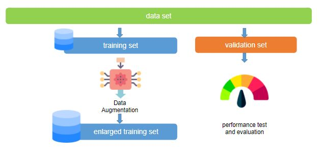
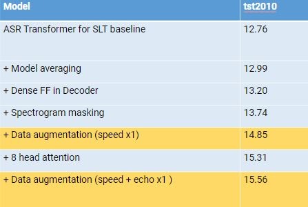
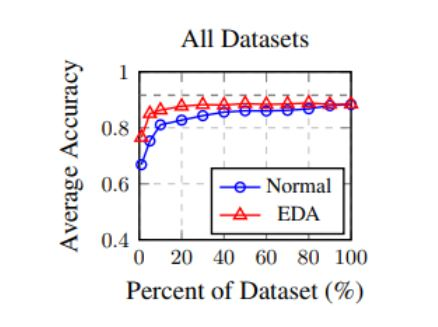
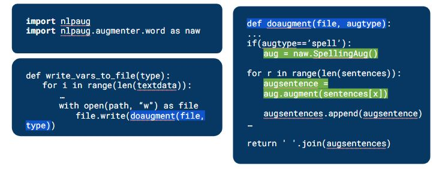

Proseminar Web Engineering im Winter Semester 2021
Data Augmentation
Md Tajul Islam
Mahda Noura M.Sc.
Technische Universität Chemnitz
Chemnitz, Deutschland
1. Introduction
Data augmentation is a practice used in statistical analysis by inserting slightly tweaked versions of existing data
including newly generated synthetic data from observed theory to enhance the volume of information.
It appears as a regularization term when
training a machine learning model, and prevents unnecessary overfitting. In data processing, it is intrinsically tied to
oversampling.
The benefit of data augmentation is that it won't modify existing data, but it will ensure
you get more information from your current data. And once we have more training data, we can
look forward to creating a better model for our test data set.
After a clear understanding of data augmentation, we will work on the text classification in natural language
processing (NLP) in the following paper and try to explain how data augmentation can play a major role in both
NLP and image processing. Throughout this paper, we will be seeing a legitimate instance of text classification. A machine
learning model will be equipped to predict whether a particular film review is positive or negative and we will
also compare the prediction result with and without using data augmentation. This is a perfect example of text
analytics in which the expectations of people towards a specific individual are split into different clusters
2. Data Augmentation Overview
2.1. Purpose of Data Augmentation
We may extend our key data set using data augmentation. If we have a large amount of data, we can train our data to deal with
overfitting in such a way. Overfitting, on the other hand, is connected to a model's efficiency, so if we can cope with
overfitting using data augmentation strategies, we can assume that data augmentation helps boost the model's performance.
As an illustration, we can produce large quantities of data by straightforward data augmentation techniques such as cropping,
rotating and flipping input images and finally we can grasp the significance of this if we discuss and equate various solutions
to a specific problem of data augmentation in image classification.[1].
2.2. Data Augmentation Techniques
To improve text, audio, images and any other form of data, we may apply data augmentation techniques. As our emphasis was
primarily on text and images, we used data augmentation to look for techniques for text and image processing.
2.2.1 Data Augmentation Techniques : Image Classification
We find in our analysis that data augmentation approaches are very simple to understand and easy to implement. Geometric
transformations (flipping, rotating, cropping etc.) are very popular for augmenting the image. Techniques of color space
transformation are very widely used where brightness can play a significant role. We often find techniques of mixing images
where two images need to be combined to augment an image.
We attempted to apply these techniques to a picture after a clear understanding. For image classification, we use imgaug,
a library in python. We need to install this library first to work with it and we need to add all the necessary files to
run our script after successfully installing it. After that, we can easily improve our picture with different techniques
using some short script.
# this will show the root image
image = imageio.imread(“.\\image_name.jpg”)
ia.imshow(image)
# rotation applied with specified degree 30, -40
rotation = iaa.Affine(rotate=(30, -40))
rotation_image=rotation.augment_image(image)
ia.imshow(rotation_image)
# croping applied with one side by removing 20%
croping = iaa.Crop(percent=(0, 0.2))
corping_image=croping.augment_image(image)
ia.imshow(corping_image)
# flipped horizontally
fliped_horizontally=iaa.Fliplr(p=1.0)
fliped_horizontally_image= fliped_horizontally.augment_image(image)
ia.imshow(fliped_horizontally_image)
# flipped vertically
flip_vertically = iaa.Flipud(p=1.0)
flip_vertically_image = flip_vertically.augment_image(image)
ia.imshow(flip_vertically_image))
2.2.2 Data Augmentation Techniques : Text Classification
There are several text augmentation methods, such as removal of synonyms, random addition, random delation, random swap.
In terms of our interpretation, by taking a single sentence as our root expression, we can clarify all these approaches.
Root Sentence : The emphasis area is Data Augmentation.
# Synonym Replacement : The key area is Data Augmentation.
# Random Addition : The emphasis area is Data Augmentation approaches.
# Random Delation : The emphasis area is Augmentation.
# Random Swap : The area emphasis is Data Augmentation.
Listing 2: Augmenting Text: Synonym replacement, Addition, Delation and Swap
2.3 Workflow of Data Augmentation
We have already explored what the augmentation of data is and its functions. In image and
text classification, we also clarify some of the widely used data augmentation techniques.
Now it's time to look at the data augmentation workflow to understand how our data works.
We'll build our train and test data set from our main data set. On our train dataset, data
augmentation will take place after that. By applying different data augmentation techniques
based on the features of our data set, we can expand our train data set.
We are able to train a large number of data sets when we get the expanded training sample
selection. If we can train a large set of data to test our validation data set, we can expect
our model's accuracy level to be high.

Illustration 1: Workflow of data augmentation [6].
2.4 When we need data augmentation
If we have a very small data set and need more data to train we can use data augmentation. In Real
world for more complex problem we may have shortage of data so we can also say that data augmentation
can be handy for complex problems.
Some other case is that if we know how to find the right data approach or overfitting
techniques, then we can also conclude that augmentation of data can be helpful for that
kind of problem.
3 Natural Language Processing (NLP)
3.1. Some Task in NLP
NLP seems to be everywhere. Recognition of speech or sound classification creates some groundbreaking
changes in life throughout our world. Digital assistants such as Alexa, Siri are now very popular in
the tech world focused on data augmentation. Face recognization is another recent innovation. The rise
in human emotion and interaction data augmentation plays a key role in incomprehension. There have been
lots of experimental studies focused on this that is still going on. NLP also plays a very crucial part
in certain complex medical fields with the help of data augmentation. We read various research paper to understand
the NLP and Data augmentation tasks in real world.
3.1.1 NLP and Data augmentation in speech emotion recognition
Problem was very small data set with imbalance dataset where the applied solution was Data augmentation by rescaling
of spectograms and in the final result it was proven that the accuracy of prediction is improved in a noticeable margin (4%) where
10-cross validation scores depending on the techniques applied. [3]. For each experiment we present the results corresponding
to its best run in the below chart.
Illustration 1: NLP and Data augmentation in speech emotion recognition [6].
3.1.2 NLP and Data augmentation in translation tasks
In the Samsung’s System for the IWSLT 2019 End-to-End Speech Translation Task where problem was Translate English to German TED
lectures where the solution was data augmentation by applying audio effects. Augmented audio files with three sox effects: tempo, speed (range of speed is low cause otherwise it would be
unnatural) and echo and By applying this solution they found Improvement in Bilingual Evaluation Understudy Score (BLEU. [4].

Illustration 1: BLEU scores for models trained on LibriSpeech data. Each subsequent model includes all the previous techniques in the table. [6].
3.1.3 NLP and Data augmentation in classification tasks
Easy Data Augmentation Techniques for Boosting Performance on Text Classification in this paper the task was
Performing text classification depends on quality and quantity of data and performed solution was Data augmentation
by application of multiple transformations on text which leads Performance gain of model if right amount of data
augmentation chosen [5].

Illustration 1: Performance on benchmark text classification tasks with and without EDA, for various dataset sizes used for training.[2].
4. Demo
4.1. NLP text classification
It is possible to download the dataset we are going to use for this article from the Cornell Natural Language Processing
Community. In total, the dataset is composed of 2000 information. Half of the documents provide positive reviews of a film,
while negative reviews are found in the remaining half.
We can use Python's Scikit-Learn library for machine learning to construct a text classification classifier again to
train a model for text classification, we'll use Python's Scikit-Learn library.
We need to process the data for the split of the data in the train and test data set after building a model using
scikitlearn.
At the very beginning would apply the Random Forest Classifier to test the model without performing data augmentation. We will perform
data augmentation in our train data set after this evaluation and train it with the same classifier to evaluate the
test data. We will be able to understand and evaluate the exact comparison both of our results.
The text can contain numbers, special characters and spaces that are unwanted. We might not even need to erase
these distinctive letters and numbers from the text, based on the challenge we face. We would then, however,
start by removing all the special characters, numbers, and undesired spaces from our text for the sake of understanding.
To complete our text processing, we used some basic reqular expression and we used lemmatization in the final step.
Lemmatization is carried out in order to avoid having features that are semantically identical but syntactically different.
For example, we don't want two distinct features that are semantically similar, called "movie" and "movies"
so we utilize lemmatization.
Machines do not comprehend the raw text, unlike humans. Only numbers can be seen by machines. Statistical models such as machine learning
can only interact, in fact, with numbers.
We need to translate our text, therefore,
into numbers. To transform text into the corresponding numerical form, different approaches exist.
Two of the most widely used and known techniques for this text to number transform are the Bag of Words Model and the Word Embedding Model.
To translate our all text to numbers, we are going to use the bag of words model for now.
For translating text to numbers, the bag of words strategy works perfect. It has one downside, however. Based on its
occurrence in a specific text, it assigns a score to a phrase. The possibility that the word may also have a high level
of occurrence in other documents is not taken into account.
TF = (A word's number of appearances)/(Total words found in the text)
IDF = Log((sum of documents)/(Number of word-containing documents))
We need to divide our information into training and testing sets, like any other supervised machine learning problem.
To do so, from the sklearn.model selection library, we will use the train_test_split utility. We divide data into a test set of 20 percent and a training set of 80 percent.
4.1.2 Apply Classifier
We divided our data into training and testing kits. The time to see the actual progress is now. In order to train our
model, we will use the Random Forest Algorithm. We'll use the RandomForestClassifier class from the sklearn.ensemble
library to train our machine learning model using the random forest algorithm. For training the algorithm, the fit
method of this class is used. We need to move on to this technique the training data and training goal sets.
Finally, we can use the forecast method of the RandomForestClassifier class to predict the sentiment
for the documents in our test set.
We will use metrics such as the confusion matrix, F1 score, and accuracy for testing the model.We can use
classification_report, confusion_matrix, and accuracy_score utilities from the sklearn.metrics library to find these values.
It can be seen from the performance that our model achieved an accuracy of 85.5 percent, which is very good
considering that all the parameters for CountVectorizer as well as for our random forest algorithm were randomly
chosen.
4.2 NLP text classification and Data Augmentation
Now as we already know our train and test data so we need to perform data augmentation in our train dataset.
We will use nlpaug library for performing data augmentation. We can perform various augmentation approaches using this library.

Illustration 1: Performing augmentation using nlpaug[6].
To look at the output we will take synonym replacement results.
Illustration 1: Result of Augmentation with synonym replacement[6].
In the left of the picture we can see that some of the highlighted words from the the orginal review
is changed with their synonym in the right picture where augmented review is shown. As an example comedy is replaced with
funniness, movie is replaced with picture and so on.
4.3 Demo Result and discussion
We already found that our text classification model performs with 85% accuracy where data augmentation is not applied. Through
the data augmentation we augmented over 2000 text files. But when we train our model with the augmented data and try to test
our dataset we found that model performence (61%) is not improved with augmentation.
The reason behind that maybe we are not able to find the best data augmentation approaches for our dataset. It will takes much more trail and error
process for find the best approach. Again for us it's really hard to augmented more data because of our low machine specifications.
5. Data augmentation pros and cons
With very little effort, all approaches to data augmentation are very easy to implement. The model will also not be
altered by data augmentation, it will retain the root information and increase the information without altering it.
One of the greatest benefits is that if we have a good understanding of how to deal with overfitting our data, the
increase in time data would help to decrease and serve as a regulator.
But it has some drawbacks as well. We need more trail and error to find the best data augmentation solution so that all
the process takes time. Again, if we use the wrong method the relationship between
the real data and augmented data can be very high and so that model can be overfit.
6. Data augmentation key takeaway
It is very normal in the real world that we will have a very limited amount of data set. If we are able to apply
augmentation methods to a limited data set, it will help to expand the data set to improve the efficiency of the model.
But we need to make sure we're able to find the right dataset solution. Since we are unable to find the best solution in
our situation, that's why our model performance is reduced. We need more trails and more augmentation strategies to find
the best solution.
6. References
[1] Perez, L. , and J.Wang . 2017. The Effectiveness of Data Augmentation in Image Classification Using Deep Learning. Available: http://arxiv.org/abs/1712.04621(12.12.2017)
[3] C. Etienne and B. Schmauch. 2018. Speech Emotion Recognition with Data Augmentation and Layer-wise Learning Rate Adjustment. Available: https://arxiv.org/abs/1802.05630(11.09.2018)
[4] T. Potapczyk, P. Przybysz, M. Chochowski, A. Szumaczuk. 2019. Samsung’s System for the IWSLT 2019 End-to-End Speech Translation Task. Available: https://zenodo.org/record/3525498#.YAscquhKjIU(02.11.2019)
[5] Jason Wei, Kai Zou. 2019. EDA: Easy Data Augmentation Techniques for Boosting Performance on Text Classification Tasks. Available: http://arxiv.org/abs/1712.04621 (25.08.2019)